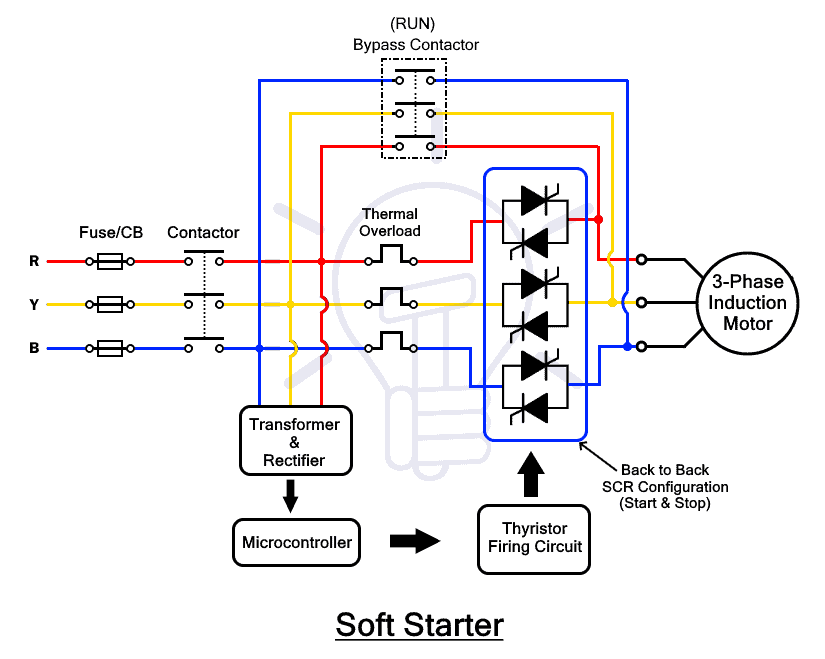
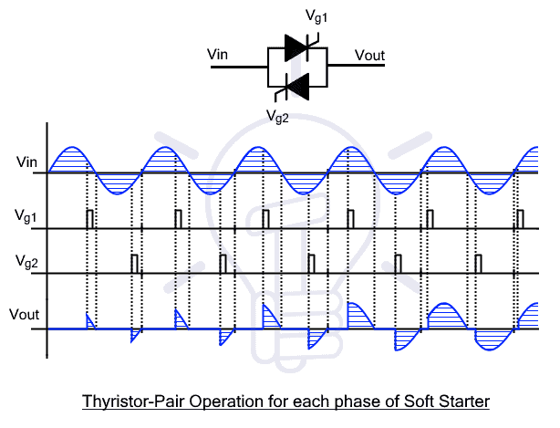
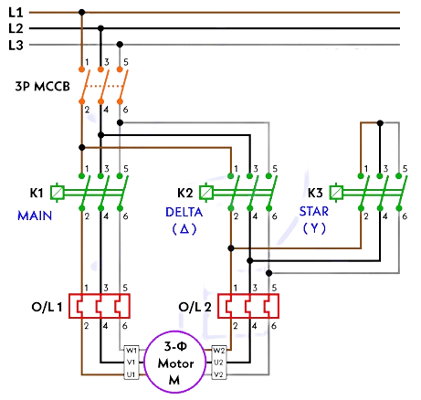
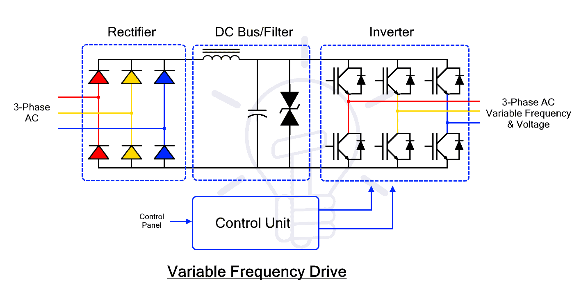
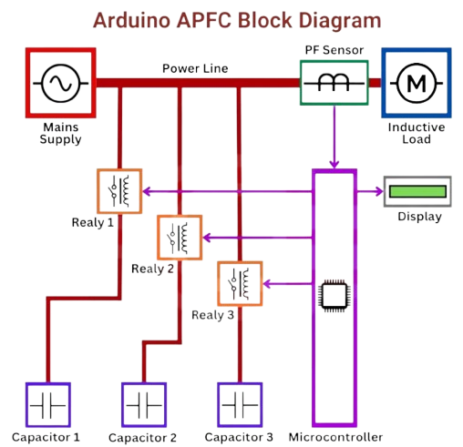
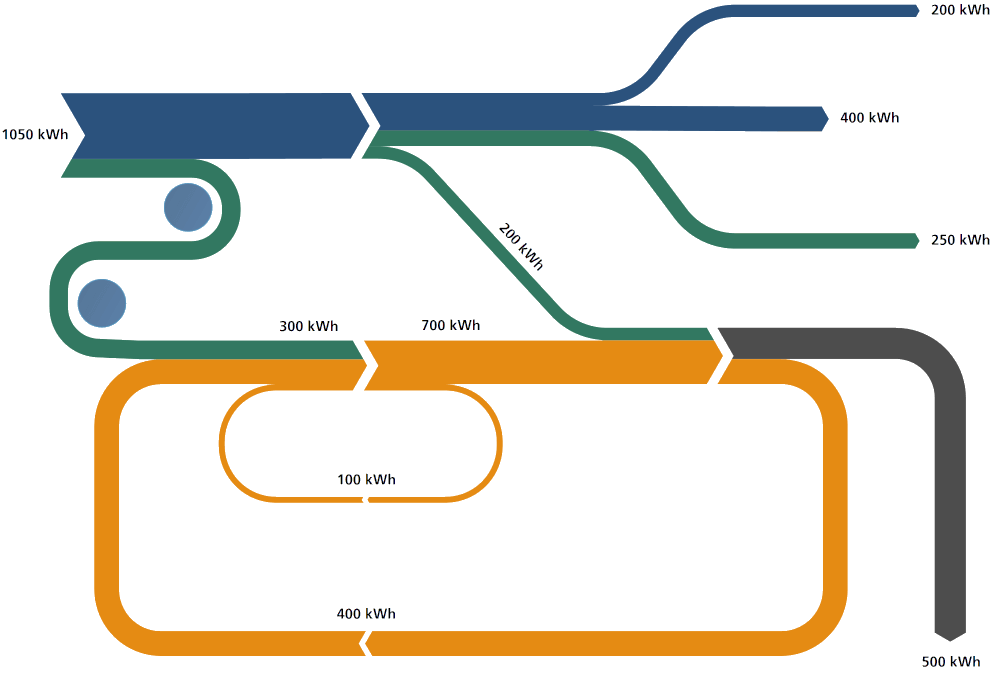

Unit 1: Energy Conservation Basics
Energy Scenario
| Category | Description | Examples |
|---|---|---|
| Commercial Energy | Energy is sold in the market at a price. Supports industrial, agricultural, transport, and commercial development. | Electricity, coal, refined petroleum products, natural gas. |
| Non-Commercial Energy | Locally sourced energy not traded commercially, is often overlooked in energy statistics. Used primarily in rural v | Firewood, cattle dung, agricultural waste. |
| Renewable Energy | Derived from inexhaustible natural sources. Sustainable and non-polluting. | Wind, solar, geothermal, tidal, hydroelectric power. |
| Non-Renewable Energy | Finite resources that cannot be replenished at the rate of consumption, leading to depletion. | Coal, oil, natural gas. |
| Primary Energy | Energy in its natural form, unprocessed or raw. Sources from which secondary energy is derived. | Coal, crude oil, natural gas, sunlight, wind, geothermal energy. |
| Secondary Energy | Energy is obtained by converting primary energy, which is easier to use, transport, and store. | Electricity (from coal or wind), gasoline (from crude oil), hydrogen fuel. |
- Energy Demand and Supply:
- Demand: The total energy required by industries, households, and transportation.
- Supply: The energy provided through primary or secondary sources.
- Challenges:
- Rapid population growth and industrialisation increase demand. Limited resources, especially fossil fuels, constrain supply.
- Renewable energy sources are being promoted to close the gap.
- National Scenario (India-specific):
- India relies heavily on coal (the primary source of electricity generation).
- Government initiatives aim to increase renewable energy (solar, wind, hydro).
- Energy efficiency measures, such as promoting energy-efficient appliances and reducing AT&C losses, are crucial.
Energy Conservation and Energy Audit
- Energy Conservation:
- The practice of using energy more efficiently or reducing unnecessary consumption.
- Focuses on behavioural changes and technological improvements.
- Ways to Conserve Energy;
- Turn off lights, electronics, and water when not in use.
- Use energy-efficient devices like LEDs, CFLs, and water-saving showerheads
- Install programmable thermostats for better temperature control.
- Opt for fans over air conditioners and maintain clean air filters.
- Take shorter showers and practice mindful water usage.
- Shut down computers and devices during prolonged inactivity.
- Energy Audit
- A comprehensive study of energy consumption within a facility or system to identify areas for improvement and savings.
- Involves analysing energy flows, pinpointing inefficiencies, and recommending solutions.
- Need for Energy Audit
- Entails monitoring, verifying, and analysing energy use.
- Provides a detailed technical report with recommendations for enhancing energy efficiency.
- Includes a cost-benefit analysis and an actionable plan to reduce energy consumption.
- Applications of Energy Audits:
- Homes: Identify inefficiencies, improve comfort, and enhance safety.
- Businesses: Discover energy-saving opportunities, boost productivity, and support innovation.
- Government Buildings: Find conservation opportunities and contribute to energy management programs.
- Types of Energy Audits:
- Energy audits range from simple walk-through assessments to in-depth analyses, depending on scope and expertise.
- Benefits of Energy Conservation & Audits:
- Cost Savings: Reduces energy bills and operational costs.
- Environmental Benefits: Cuts emissions and supports clean energy.
- Resource Preservation: Reduces reliance on fossil fuels.
- Health Benefits: Improves air quality and comfort.
- National Energy Goals: Supports efficiency and energy independence.
- Energy Audits: Identifies inefficiencies and suggests improvements.
- Informed Decision-Making: Provides data for better energy choices.
- Estimating ROI: Assesses financial return on energy investments.
- Difference:
- Energy Conservation: Broad practice, ongoing, and applies universally.
- Energy Audit: Specific study conducted at a particular facility or system.
Indian Electricity Act 2003
- Purpose:
- To consolidate and modernize the electricity laws in India.
- Promotes competition, efficiency, and energy conservation.
- Relevant Clauses for Energy Conservation:
- Section 57: Power utilities are required to ensure energy efficiency in supply.
- Section 86: State regulators are to promote energy conservation through tariffs.
- Section 135: Penalises theft and inefficiencies in the power sector.
- Impact:
- Encourages industries and households to adopt energy-saving practices.
- Strengthens regulatory frameworks for energy efficiency.
- Features:
- Bureau of Energy Efficiency (BEE): Statutory body to promote energy efficiency through standards, labelling, and policies.
- Energy Standards & Labelling: Mandatory star ratings (1–5 stars) for appliances (ACs, refrigerators, etc.).
- Energy Conservation Building Code (ECBC): Applies to commercial buildings (≥100 kw load) for efficient design (HVAC, lighting, insulation).
- Energy Auditors & Managers: Accredited professionals for audits and efficiency management.
- Penalties: Fines up to ₹10 lakh for non-compliance (e.g., missing standards, audit reports).
- State Designated Agencies (SDAs): State-level bodies to enforce the Act locally.
- Public Awareness: Campaigns like National Energy Conservation Awards and Diwali Energy Week.
- Energy Conservation Fund: Funds R&D, pilot projects, and awareness programs.
- Renewable Energy Promotion: Indirect support via reduced fossil fuel dependency.
- Impact: Reduced industrial energy intensity by ~20%, saved 300 billion units of electricity (as of 2023
Bureau of Energy Efficiency (BEE)
The Government of India established the Bureau of Energy Efficiency (BEE) on 1st March 2002 under the Energy Conservation Act, 2001. Its core mission is to:
Develop Policies and Strategies: Focused on self-regulation and market-driven principles.
Reduce Energy Intensity: Aim to decrease the energy consumption per unit of economic output, fostering a more energy-efficient economy.
Encourage Stakeholder Participation: Collaborate with all relevant sectors to ensure the widespread and lasting adoption of energy efficiency measures.
Framework: Operate within the guidelines and goals of the Energy Conservation Act, 2001.
Star Labelling
- Concept:
- A labelling system that rates the energy efficiency of appliances, equipment, and vehicles.
- Higher star ratings indicate greater energy efficiency (e.g., a 5-star AC consumes less energy than a 3-star AC).
- Need:
- Helps consumers make informed choices about energy-efficient products.
- Encourages manufacturers to produce efficient appliances.
- Benefits:
- Economic: Reduces electricity bills.
- Environmental: Lowers greenhouse gas emissions.
Unit 2: Energy Conservation in Electrical Machines
2.1 Need for Energy Conservation
Induction Motors:
Induction motors account for ~70% of industrial energy consumption, often running continuously for extended hours.
Reducing energy consumption in induction motors can significantly lower operational costs, especially in industries with multiple motors
Historically, motor design prioritised low initial cost over energy efficiency, leading to low power factors, high losses, and poor efficiency. Post-1990s, rising energy costs pushed manufacturers to innovate for higher efficiency.
Transformers:
Transformers are crucial in the power distribution system, and their efficiency directly impacts energy conservation.
High losses in transformers due to improper load conditions and low efficiency contribute to wasted energy and unnecessary operating costs.
Optimising transformer efficiency reduces electrical losses, saves energy, and reduces operational expenses.
2.2 Energy Conservation Techniques in Induction Motors
Improving Power Quality:
Maintain voltage (±6%) and frequency (±3%) within standards.
Address voltage unbalance by distributing single-phase loads evenly.
Use harmonic filters to reduce distortions.
Motor Survey: Regular surveys help identify underperforming motors, inefficient operation, and energy wastage. By replacing or optimising motors, significant energy savings can be achieved.
Matching Motor with Loading:
Motors should be properly sized according to the load they handle. Over-sized motors run inefficiently at low loads, while under-sized motors can suffer from overload and wear.
Ensure motors operate near full load (≥80% capacity) for peak efficiency.
Minimising Idle and Redundant Running of Motors:
Motors should not run when not required. Many industries leave motors running idle, wasting energy.
Installing timers, sensors, or an automated control system ensures that motors run only when necessary, minimising energy waste.
Operating in Star Mode for Lower Output Power:
For motors under 30% load, switch to star connection to save 5–15% energy.
Use automatic star-delta switches for fluctuating loads
Rewinding of Motor:
Over time, motor windings degrade, reducing the motor’s efficiency. Rewinding the motor can restore its efficiency, but it should be done with high-quality materials and by professionals to ensure optimal performance.
Motor rewinding can extend its life and maintain energy efficiency.
Replacement by Energy-Efficient Motors:
Incorporate design improvements: lower-loss steel, thicker wires, optimised air gaps, copper rotors, and smaller fans.
Achieve 3–4% higher efficiency than standard motors.
Periodic Maintenance: Regular maintenance is key to ensuring the motor runs at its peak efficiency
Clean motors for proper ventilation.
Lubricate bearings and check alignment.
Monitor voltage balance and electrical connections to prevent loss
2.3 Energy Conservation Techniques in Transformers
Load Sharing:
Distributing the load across multiple transformers helps reduce the overloading of any single transformer, which in turn improves efficiency and reduces losses.
Proper load sharing ensures that each transformer operates at an optimal load point.
Parallel Operation:
Operating transformers in parallel is a common method for handling varying loads efficiently.
When multiple transformers are run in parallel, they can share the load, reducing the risk of overloading a single unit and minimizing energy losses.
Isolating Techniques:
This technique involves shutting down transformers when they are not in use, preventing energy losses due to idle operation.
Disconnecting transformers from the network when not needed can save substantial amounts of energy.
Replacement by Energy-Efficient Transformers:
Replacing old transformers with modern, energy-efficient models reduces core losses and improves overall efficiency.
Energy-efficient transformers use better materials and designs that lower operational losses, contributing to long-term energy savings.
Periodic Maintenance:
Like motors, transformers also need regular maintenance to ensure they operate efficiently.
Maintenance tasks include checking for insulation breakdown, oil leakage, and monitoring the operational temperature. Well-maintained transformers work more efficiently and reduce energy consumption.
Types of losses in transformers and minimising techniques:
| Type of Loss | Cause | Minimization Techniques | Remarks |
|---|---|---|---|
| Copper Loss (I²R Loss) | Resistance in windings generates heat when current flows. | - Use thicker conductors. - Use high-purity copper. - Optimise winding design. | Proportional to the square of the load current. |
| Hysteresis Loss | Repeated magnetisation/demagnetisation of the core material. | - Use silicon steel or amorphous alloys. - Anneal the core. | Depends on the magnetic properties of the core material. |
| Eddy Current Loss | Circulating currents are induced in the core by alternating flux. | - Laminated core design. - Use high-resistivity core materials (e.g., silicon steel). | Reduced by laminations (0.3–0.5 mm thick). |
| Stray Loss | Leakage flux induces currents in nearby metal parts (e.g., tank, bolts). | - Improve winding/core design (e.g., interleaved windings). - Use magnetic shielding. | More significant in large transformers. |
| Dielectric Loss | Energy dissipation in insulation due to alternating electric fields. | - Use high-quality insulation (e.g., synthetic esters). - Keep insulation dry and contaminant-free. | Critical for high-voltage transformers. |
2.4 Energy Conservation Equipment
Soft Starter:
A soft starter is used to control the starting current of motors by gradually increasing the voltage. This reduces the mechanical stress on the motor and electrical systems, which can otherwise cause inefficiencies. .

Working Principle
Voltage Control: SCRs adjust firing angles (0°–180°) to control conduction time.

Startup: Begins at ~180° (minimal voltage), gradually decreasing the angle to increase voltage and motor speed.
Full Speed: Bypass contactor takes over, disengaging SCRs for efficient operation.
Shutdown: Voltage is ramped down smoothly via SCRs to decelerate the motor
Advantages
Smooth Operation: Eliminates mechanical jerks, extending motor lifespan.
Reduced Inrush Current: Prevents power surges and overheating.
Adjustable Acceleration/Deceleration: Customizable ramp times for specific applications.
Compact & Cost-Effective: Smaller and cheaper than Variable Frequency Drives (VFDs).
Low Maintenance: Minimizes wear and tear on belts, gears, and couplings.
5. Disadvantages
No Speed Regulation: Operates at fixed frequency; speed depends on load (unlike VFDs).
Heat Dissipation: SCRs require heat sinks for cooling.
Reduced Starting Torque: Suitable only for low/medium torque applications (e.g., pumps, fans)
9. Key Formulas
Starting Torque: Proportional to the square of current (T∝I2).
Voltage Regulation: Vout=Vin×sin(α), where α = firing angle.
Automatic Star Delta Converter:
An automatic star-delta converter is a device that allows motors to start in a star configuration and switch to delta mode once the motor has reached a certain speed.
Working Principle :
Initial Startup (Star Mode): The motor starts in a star (Y) configuration, where each phase winding receives a reduced voltage (approximately 58% of line voltage). This lowers the starting current to one-third of the direct online (DOL) starting current, minimising electrical stress on the motor and power grid. Example: For a 440v supply, the phase voltage in star mode is
Transition to Delta Mode:Once the motor reaches ~80–90% of its rated speed (typically after 5–10 seconds), an adjustable electronic timer switches the motor to a delta (Δ) configuration, applying full line voltage (e.g., 440V) for efficient operation under load.

Load-Based Switching (Optional):Advanced systems (e.g., ADLS) dynamically switch between star and delta modes based on load conditions. For loads <40%, the motor reverts to star mode to save energy; for loads >40%, it shifts to delta mode for full torque
Advantage
Reduces starting current by ~66% and energy use by 10-50%.
Cost-effective vs. VFDs/soft starters.
Minimises mechanical stress during startup.
Limitations
Starting torque drops to 1/3 of DOL (unsuitable for heavy loads).
Requires 6-terminal motors and delta-rated windings.
Switching surge risk if timing is incorrect.
Application:
Light-load machines: Pumps, fans, compressors.
Energy-intensive industries: HVAC, water treatment.
Educational kits for motor control demonstration
Variable Frequency Drives (VFD):
A Variable Frequency Drive (VFD) is an advanced motor controller used to adjust the speed and torque of AC induction motors by varying the input voltage and frequency. It enhances energy efficiency, enables precise process control, and extends motor lifespan.
Working Principle of a Variable Frequency Drive (VFD)
AC to DC Conversion (Rectification)
Rectifier Stage: Converts incoming AC power (e.g., 480V, 60Hz) to DC power.
Types of Rectifiers:
Uncontrolled Rectifiers: Use diodes for fixed DC output.
Controlled Rectifiers: Use SCRs (Silicon-Controlled Rectifiers) for adjustable DC output.
Example: 480V AC → ~680V DC (via three-phase rectifier).
DC Stabilisation (Intermediate DC Bus)

Components: Capacitors: Smooth voltage ripple for stable DC output.
Inductors: Reduce current fluctuations and harmonic distortion.
Function: Acts as an energy reservoir for consistent power delivery to the inverter.
DC to Variable AC Conversion (Inversion)
Inverter Stage: Uses IGBTs (Insulated Gate Bipolar Transistors) to convert DC back to variable AC.
Pulse Width Modulation (PWM): Rapidly switches IGBTs on/off to simulate a sinusoidal AC waveform.
Adjusts output voltage (0–480V) and frequency (0–60Hz).
Example: 30Hz output → 50% reduction in motor speed vs. 60Hz.
Motor Speed Control
Speed Formula: N=(120×f)/P(where P = number of motor poles)
Example: A 4-pole motor at 60Hz → N=120×604=1800 RPMN=4120×60=1800RPM.
Control Circuit
Algorithms: Scalar (V/f), vector control, or direct torque control (DTC) for IGBT switching.
Closed-Loop Feedback: Uses encoder/sensor data for precise speed/torque adjustments.
Features: Fault protection (overcurrent, overtemperature).
User-configurable settings for operational flexibility.
Benefits of VFDs
Energy Savings: Reduces power consumption by up to 65% in variable-load applications.
Soft Start/Stop: Limits inrush current (prevents 6–8x nominal current spikes).
Precise Control: Closed-loop systems maintain speed under load fluctuations.
High Power Factor: Built-in correction minimizes reactive power losses.
Reduced Mechanical Stress: Smooth acceleration/deceleration protects belts and gears.
Versatility: Compatible with pumps, fans, conveyors, and CNC machines.
Advanced Control Techniques
Scalar Control (V/f): Maintains a constant voltage-to-frequency ratio for basic speed control.
Vector Control: Adjusts torque and flux independently for high-precision applications.
Direct Torque Control (DTC): aProvides rapid torque response without feedback sensors.
Applications
HVAC Systems: Optimizes fan and pump speeds for energy efficiency.
Industrial Machinery: Enables precise speed adjustments in conveyors and CNC machines.
Water Treatment: Controls pump pressure and flow rates dynamically.
Limitations
Cost: Higher initial investment compared to soft starters.
Complexity: Requires technical expertise for programming and maintenance.
Heat Generation: IGBTs and capacitors need cooling systems.
Automatic Power Factor Controller (APFC):
Objective: To automatically maintain a near-unity power factor (≈0.95–1) in electrical systems by dynamically adjusting reactive power compensation using capacitor banks.
Working Principle

Power Factor Measurement:
The APFC continuously monitors voltage and current waveforms.
Calculates the phase difference (θ) between them to determine the power factor (PF = cosθ).
Reactive Power Demand:
If PF is lagging (inductive load dominance), the system needs capacitive reactive power (from capacitors).
If PF is leading (overcompensation), capacitors are disconnected.
Automatic Adjustment: The controller activates relays to connect/disconnect capacitor banks in steps (e.g., 5 kVAR, 10 kVAR) based on real-time load conditions.
4. Operation Steps
Sensing: CTs and voltage sensors feed real-time data to the controller.
Calculation: The controller computes the instantaneous power factor and compares it with the setpoint (e.g., 0.95).
Decision-Making:
If PF < setpoint: Sequentially switches ON capacitor banks until PF improves.
If PF > setpoint (leading): Sequentially switches OFF capacitors to avoid overcompensation.
Switching Logic:
Uses priority-based switching to avoid frequent on/off cycles (e.g., "first-on, last-off").
Incorporates time delays (5–30 seconds) to prevent transient responses.
Features
Dynamic Response: Adjusts to load fluctuations (e.g., machinery start/stop).
Harmonic Filtering: Some APFCs include detuned reactors to prevent capacitor damage from harmonics.
Alarms & Protections: Overvoltage, overload, and temperature protection.
Benefits
Reduces Electricity Bills: Avoids utility penalties for low power factor.
Lowers Transmission Losses: Reduces I2RI2R losses by minimizing reactive current.
Improves System Capacity: Frees up transformer and cable capacity.
Enhances Voltage Stability: Prevents voltage drops due to reactive power demand.
Intelligent Power Factor Controller (IPFC):
An IPFC is a more advanced version of the APFC, using microcontroller-based systems to monitor and optimize the power factor in real-time.
| Aspect | APFC | IPFC |
|---|---|---|
| Core Function | Adjusts reactive power via fixed capacitor switching to maintain PF ≈1. | Uses algorithms for dynamic capacitor selection, handling lagging/leading PF. |
| Load Adaptability | Suitable for stable/moderately fluctuating loads. | Optimized for complex, unbalanced, or rapidly changing loads. |
| Compensation Method | Stepped compensation (predefined capacitor stages). | Adaptive compensation (selects optimal capacitor combinations). |
| Advanced Features | Basic PF monitoring, overload protection. | True RMS measurement, auto-calibration, remote monitoring, diagnostics. |
| Diagnostics | Basic thermal overload protection. | Detects capacitor/CT failures, phase imbalance, and harmonic distortion. |
| Energy Efficiency | Reduces bills by 10–50% via PF correction. | Higher efficiency in unbalanced systems; minimizes reactive power waste. |
| Cost | Lower upfront cost. | Higher initial investment but better long-term ROI. |
| Applications | HVAC, pumps, facilities with stable loads. | Industries with unbalanced loads (e.g., textiles, chemical plants). |
| User Interface | Simple controls. | Password protection, graphical displays, remote access. |
| Key Advantage | Cost-effective for simple systems. | Precision, adaptability, and future-proofing for complex setups. |
2.5 Energy-Efficient Motors
Key improvements include:
Thin, low-loss steel laminations
Increased copper conductor volume
Modified slot design
Optimized air gap
Improved rotor insulation
Enhanced cooling fan
Advantages:
Electricity Savings: 3% –7% higher efficiency than standard motors, reducing electricity costs.
Environmental Benefits: Lowers greenhouse gas emissions.
Economic Benefits: Longer motor lifespan and reduced downtime
Improved Reliability: Reduced heat generation and vibration enhance longevity.
Applications:
Used in industries like manufacturing, HVAC systems, pumps, compressors, and fan systems.
Limitations:
Higher Initial Cost: More expensive upfront due to premium materials.
Limited Speed Control: Fixed-speed operation (unlike VFDs).
Portability Concerns: Heavier/more complex designs may limit mobility (context-dependent)
2.6 Energy-Efficient Transformers
Energy-Efficient Transformers:
These transformers are built with advanced materials (like high-grade steel) and design innovations that minimise core losses and improve efficiency.
Benefits: Lower operational costs and improved efficiency, especially in large-scale power distribution.
| Aspect | Amorphous Core Transformer | Cast Resin Transformer |
|---|---|---|
| Core Material | Amorphous metallic glass (non-crystalline alloy) | Epoxy resin + quartz powder (solid insulation) |
| Efficiency | Up to 98.5% at 35% load | 95–98% depending on design |
| Loss Reduction | 70–80% lower core losses (low hysteresis & eddy current losses) | Focuses on fire safety and reduced maintenance |
| Cost | 20–30% higher than CRGO transformers | 20–40% higher than oil-cooled transformers |
| Cooling Method | Oil-cooled (with conventional cooling arrangements) | Air-cooled (dry-type, no oil required) |
| Maintenance | Minimal; long lifespan | Low maintenance; no oil testing required |
| Overload Capacity | High; handles short circuits well | High; withstands thermal and mechanical stress |
| Environmental Impact | Reduces CO₂ by minimizing energy waste | Eco-friendly; no oil leakage, fire-resistant |
| Durability | Thinner core (fragile); longer lifespan if undamaged | Operates in -25°C to +40°C; moisture/chemical resistant |
| Noise Level | Moderate (oil dampens some sound) | Low (<65 dB) due to design and materials |
| Repairability | Easier than cast resin | Difficult; often requires complete rewinding |
| Physical Size | Larger tank and core size due to lower flux density | Compact and lightweight |
| Typical Ratings | Up to 1,600 kVA | Often limited to medium voltages |
| Energy Conservation Features | Low saturation flux, high resistivity, non-crystalline structure for minimal losses | Indirect impact via air cooling and safety (less energy for maintenance or downtime) |
| Ideal Applications | Power grids, solar/wind farms, heavy industries | Hospitals, malls, airports, chemical zones, indoor/urban setups |
Unit 3: Energy Conservation in Electrical Installation System
3.1 Aggregated Technical and Commercial Losses (AT&C) – Power System at State, Regional, National, and Global Levels
Aggregated Technical and Commercial Losses (AT&C) refer to the total loss of electricity in a power system, comprising both technical losses and commercial losses:
Technical losses occur due to the inherent resistance and inefficiencies in the transmission and distribution systems (e.g., conductor losses, transformer losses, etc.).
Reduction Methods:- Upgrading infrastructure, using high-efficiency transformers, and improving load management.
Commercial losses are losses due to issues like theft, inaccurate metering, billing discrepancies, or inefficiencies in the collection of payments.
Reduction Methods: Implement smart metering, enhance monitoring systems, and enforce strict laws against theft.
Power System at Different Levels:
State Level: Losses occur in the state transmission and distribution networks, where infrastructure and maintenance issues can result in energy wastage.
Regional Level: Similar to state-level losses, but on a larger scale, affecting multiple states or regions.
National Level: A more comprehensive view of AT&C losses across the entire country, influencing national energy consumption and economic efficiency.
Global Level: Global power systems face losses due to inefficiencies in power generation, transmission, and distribution. Reducing global AT&C losses is crucial for improving global energy sustainability.
3.2 Causes of Technical Losses and Measures to Reduce Them
| Category of Loss | Causes | Reduction Measures |
|---|---|---|
| Fixed Losses | Fixed Losses | Fixed Losses |
| Transformer Core Losses | Magnetic hysteresis and eddy currents in transformer cores. | - Use laminated silicon steel cores to reduce eddy currents. - Upgrade to energy-efficient transformers (e.g., amorphous core transformers). |
| Corona Discharge | Ionization of air around high-voltage lines, causing energy dissipation. | Use conductors with larger diameters. - Maintain proper spacing between conductors. |
| Dielectric/Leakage Losses | Energy loss due to insulation inefficiencies in cables/equipment. | Use high-quality insulation materials. - Regularly test and replace aging insulation. |
| Variable Losses | Variable Losses | Variable Losses |
| I²R (Joule) Losses | Resistance in conductors; losses proportional to I2×RI2×R. | Use larger cross-sectional conductors (e.g., copper/aluminum). - Reduce cable length by optimizing network design. |
| Low Power Factor | Reactive power demand from inductive loads (e.g., motors). | Install capacitor banks at substations/consumer ends. - Use synchronous condensers for power factor correction. |
| Unbalanced Loads | Uneven distribution of loads in 3-phase systems. | Redistribute loads to balance phases. - Use smart sensors for real-time load monitoring. |
| Poor Voltage Regulation | Voltage drops due to long distribution lines or overloading. | Install voltage regulators or tap-changing transformers. - Maintain voltage within ±5% of rated levels. |
| System Design & Operation | System Design & Operation | System Design & Operation |
| Suboptimal Voltage Levels | Under/over-voltage increases losses. | Implement automatic voltage regulators (AVR). - Use smart inverters for distributed generation. |
| Long Distribution Lines | High resistance and voltage drops in extended networks. | Deploy High Voltage Distribution Systems (HVDS) to reduce line length. - Install local transformers near load centers. |
| Demand-Side Management (DSM) | Inefficient energy use during peak hours. | Promote time-of-use (TOU) pricing to shift demand. - Encourage energy-efficient appliances (e.g., LEDs, inverter ACs). |
Demand Side Management (DSM): optimises energy use to boost grid efficiency, cut costs, and support sustainability.
Strategies:
TOU Pricing: Higher rates during peak hours.
Direct Load Control: Adjust appliances remotely.
Energy Audits: Spot inefficiencies.
Peak Shaving: Use batteries during high demand.
Why It Matters:
Saves costs, avoids grid upgrades.
Balances supply and demand, supports renewables.
Empowers consumers, reduces emissions.
Supply Side Management (SSM) optimises energy production, transmission, and distribution to ensure reliability, efficiency, and sustainability.
Strategies:
Smart Grids → Real-time monitoring, automated control.
Distributed Energy Resources (DERs) → Rooftop solar, microgrids.
AI Forecasting → Predict supply-demand gaps.
Flexible Generation → Gas peaker plants, grid batteries.
Policy Incentives → Subsidies for renewables, carbon pricing.
Examples:
Hybrid plants (solar + batteries).
Virtual Power Plants (VPPs) → Aggregate EVs, home batteries.
Grid modernization (energy-efficient transformers).
Why SSM Matters:
Ensures stable, affordable, clean energy supply.
Complements DSM for a balanced energy ecosystem.
Critical for a low-carbon, resilient future.
3.3 Causes of Commercial Losses and Measures to Reduce Them
| Category | Causes | Reduction Measures |
|---|---|---|
| Meter Reading Errors | - Manual reading mistakes. - Incorrect/missed readings. - Human error. | - Automate meter reading using smart meters with real-time data transmission. - Implement remote monitoring systems to eliminate manual intervention. |
| Faulty Metering | - Outdated or malfunctioning meters. - Calibration errors. | - Replace old meters with smart meters (accurate and tamper-proof). - Conduct regular calibration and maintenance. |
| Electricity Theft | - Illegal tapping of lines. - Meter bypassing/tampering. - Fraudulent billing. | - Install tamper-proof meters with alarms for unauthorized access. - Use smart grid analytics to detect anomalies. - Conduct regular inspections with drones/sensors. - Enforce strict penalties and legal action. |
| Billing Inefficiencies | - Manual billing errors. - Unmetered supply (e.g., streetlights). - Delayed billing. | - Adopt automated billing systems (e.g., blockchain for transparency). - Use IoT devices to monitor unmetered loads. - Implement prepaid metering for timely payments. |
| Administrative Issues | - Corruption/collusion. - Poor record-keeping. - Lack of audits. | - Use data analytics to flag irregularities (e.g., sudden drops in consumption). - Conduct regular audits with third-party oversight. - Train staff on ethical practices. |
| Consumer Disputes | - Unresolved billing complaints. - Lack of transparency. | - Provide real-time consumption data via mobile apps. - Set up customer grievance portals for quick resolution. |
3.4 Energy Conservation Equipment
Maximum Demand Controller:
Function: Monitors the power consumption and limits the maximum demand by controlling the load. It helps in avoiding exceeding the maximum demand limit, which could lead to penalties.
Benefits: Ensures compliance with tariff structures, optimizes energy usage, and reduces peak demand.
KVAR Controller:
Function: This device helps in controlling reactive power (kVAR) in the system, which is crucial for maintaining an optimal power factor.
Benefits: Reduces power losses and improves the overall efficiency of the electrical system.
Automatic Power Factor Controller (APFC): @U2.4-iv
Active Harmonic Filter:
Function: Reduces harmonic distortions in the power supply caused by non-linear loads (e.g., variable frequency drives, computers).
Benefits: Improves power quality, reduces heating in electrical equipment, and increases system efficiency.
.
3.5 Energy Conservation in Lighting System
Replacing Lamp Sources:
Replace incandescent or halogen lamps with LED lights or CFLs, which use less energy and have a longer lifespan.
Upgrade old fluorescent lighting to modern, energy-efficient fluorescent lamps.
Using Energy-Efficient Luminaries:
Choose LED luminaries that offer high luminous efficiency while consuming less energy.
opt for energy-efficient designs with better heat dissipation, reducing the need for high power consumption.
Using Light-Controlled Gears:
Use dimmers and motion sensors to control the intensity of lighting, reducing energy consumption during low-traffic periods.
Installation of Separate Transformer/Servo Stabilizer for Lighting:
Install dedicated transformers or stabilizers for lighting systems to prevent overloading the main electrical system and to ensure voltage stability of lights.
This helps in energy optimization, especially in large buildings or industrial setups.
Periodic Survey and Adequate Maintenance Programs:
Regular inspection and cleaning of light fixtures and lamps.
Timely replacement of faulty or outdated bulbs to maintain efficiency.
Advantages of High-Frequency Electronic Ballasts vs. Conventional Ballasts:
Higher Efficiency → 90-95% efficiency (vs. 60-70%).
No Flicker/Noise → Operates at 20-60 kHz (eliminates flicker/hum).
Longer Lamp Life → Extends lifespan by 10-20%.
Compact & Lightweight → Easy installation, space-saving.
Smooth Dimming → Supports 0-100% dimming capability.
Improved Power Factor → Near-unity PF (0.95+), reduces grid strain.
Less Heat → Lowers cooling costs and fire risks.
Modern Compatibility → Works with LEDs/smart lighting.
Eco-Friendly → No hazardous materials, lowers carbon footprint.
Cost-Effective → Saves energy bills, reduces maintenance.
3.6 Energy Conservation Techniques in Fans and Electronic Regulators
Fans:
Energy-efficient fan motors and optimized fan blades can reduce energy consumption.
Use fans only when necessary and at the required speed.
Install dimmers or speed controllers to adjust fan speed based on need.
Electronic Regulators:
Use electronic fan regulators instead of traditional resistive types to reduce energy losses and improve control over the fan speed.
3.7 Techniques of Energy Saving in Ventilating Systems and Air Conditioners
Ventilating Systems:
Optimizing airflow: Install variable speed drives to control the fan speed according to the ventilation requirement.
Airflow control: Use energy-efficient motors and fans, and ensure proper duct sealing to reduce air leakage.
Air Conditioners:
Energy-efficient air conditioners with high SEER (Seasonal Energy Efficiency Ratio) ratings should be used.
Programmable thermostats can be used to ensure the air conditioner runs only when needed, reducing unnecessary energy consumption.
Regular maintenance such as cleaning filters and coils improves efficiency.
3.8 Techniques of Energy Saving in Furnaces, Ovens, and Boilers
Furnaces:
Use high-efficiency burners and ensure proper insulation to minimize heat losses.
Implement temperature control systems to maintain consistent temperatures and reduce unnecessary heating.
Ovens:
opt for energy-efficient ovens with advanced heat recovery systems.
Regular calibration and maintenance of the oven ensures efficient energy use.
Boilers:
Install condensing boilers to recover heat from exhaust gases.
Ensure proper water treatment to minimize scaling and improve boiler efficiency.
Unit 4: Energy Conservation through Cogeneration and Tariff
4.1 Cogeneration and Tariff – Concept, Significance for Energy Conservation
Cogeneration, also known as combined heat and power (CHP), refers to the simultaneous generation of electricity and useful heat from a single energy source. It enhances overall energy efficiency by utilising the heat that would otherwise be wasted in conventional power generation. Cogeneration is significant for energy conservation because:
It reduces fuel consumption by utilising energy more efficiently.
It decreases environmental impacts by reducing the amount of fuel needed for the same energy output.
It improves the reliability and efficiency of power generation.
Tariff: refers to the pricing structure utilised by utility companies for electricity supply. Various tariff structures are implemented to encourage efficient energy consumption, minimise peak demand, and promote energy conservation.
Benefits of cogeneration:
Improved Energy Efficiency: By utilising waste heat, cogeneration systems achieve efficiencies of 70-90%, compared to 30-40% for conventional power plants.
Cost Savings: Reduced fuel consumption leads to lower energy costs for industries and facilities.
Lower Environmental Impact: Reduced fuel use results in lower greenhouse gas emissions and pollutants.
Energy Security: On-site power generation reduces dependency on the grid, improving energy reliability.
Reduced Transmission Losses: Generating power close to the point of use minimises losses in transmission and distribution.
Flexible Applications: Suitable for various industries, including chemical plants, textile mills, and district heating systems.
Fuel Flexibility: Cogeneration systems can operate on natural gas, biomass, coal, or other fuels, making them adaptable to different energy sources.
4.2 Types of Co-generation Based on Sequence of Energy Use
Topping Cycle Cogeneration:
Concept: In this system, electricity is generated first from the primary energy source, and the waste heat from this process is used to produce useful heat.
Process: The fuel is first used to generate electricity, and the leftover heat is then utilized for heating purposes (such as in industrial processes, space heating, or water heating).
Example: A steam turbine generating electricity, where the exhaust steam is used for industrial heating.
Bottoming Cycle Cogeneration:
Concept: In bottoming cycle systems, waste heat from industrial processes or other sources is used first, and the remaining energy is converted into electricity.
Process: Waste heat from a process (e.g., heat from a furnace or chemical plant) is captured and converted into electricity, with the remaining heat used for other purposes.
Example: A gas turbine generating power, where the exhaust gases are used to drive a steam turbine for additional power generation.
4.2.2 Types of Cogenerations Based on Technology
Steam Turbine Cogeneration:
Technology: Uses steam generated from a boiler to drive a steam turbine that produces electricity. The heat from the steam can also be used for heating purposes in the plant.
Application: Common in industries where high-grade heat is required (e.g., chemical, textile, and paper industries).
Gas Turbine Cogeneration:
Natural Gas
↓
[Gas Turbine] → Mechanical Energy → [Generator] → **Electricity**
↓
Exhaust Gases → [Heat Recovery Steam Generator (HRSG)] → **Steam/Heat**
↓
Hot Water/Space Heating || Industrial Process Heat
How It Works:
Natural Gas Combustion: Natural gas is burned in the gas turbine, producing high-pressure exhaust gases.
Electricity Generation: The turbine spins a generator, producing electricity for on-site use or the grid.
Waste Heat Recovery:
Hot exhaust gases (400–600°C) from the turbine are diverted to a Heat Recovery Steam Generator (HRSG).
The HRSG uses this waste heat to produce steam or hot water.
Heat Utilization: The steam/hot water is used for:
Space heating (e.g., hospitals, offices).
Industrial processes (e.g., drying, sterilization).
Domestic hot water supply.
Key Advantages:
High Efficiency: Up to 80% total efficiency (vs. ~40% for separate heat/power systems).
Lower Emissions: Reduced CO₂ due to minimized fuel waste.
Cost Savings: Cuts energy bills by using waste heat.
Applications:
Hospitals, factories, district heating systems, and large commercial buildings.
Reciprocating Engine Cogeneration:
Technology: A reciprocating engine drives a generator to produce electricity. The engine's exhaust gases are used for heating or steam production.
Application: Often used in smaller-scale systems, including district heating, or where flexible and quick power generation is needed.
4.2.3 Factors Governing the Selection of a Cogeneration System
Energy Demand: The need for both electrical and thermal energy is a critical factor. If a system needs both, cogeneration is ideal. If only electricity is required, a traditional power generation system may be more suitable.
Efficiency: The efficiency of the cogeneration system is crucial. Topping cycle systems tend to have higher electrical efficiency, while bottoming cycle systems may focus more on heat recovery.
Cost: The initial capital investment, operation and maintenance costs, and potential savings through fuel use need to be evaluated.
Fuel Availability: The availability and type of fuel (e.g., natural gas, biomass, coal, etc.) will determine the choice of cogeneration technology.
Environmental Impact: Cogeneration systems that use renewable or cleaner fuels will have a lower environmental impact. Also, utilizing waste heat reduces the need for external heating, reducing overall emissions.
System Size and Complexity: Larger, more complex cogeneration systems may be required for industries with higher energy demands, while smaller systems may suffice for residential or commercial applications.
Heat-to-Power Ratio (HPR) in cogeneration (CHP) systems is crucial because:
Efficiency Optimization
Matches thermal (heat) and electrical (power) outputs to a facility’s needs, minimizing waste.
System Design
Dictates CHP sizing:
High HPR for heat-heavy uses (e.g., hospitals, district heating).
Low HPR for power-heavy needs (e.g., data centers).
Cost Savings
Reduces reliance on separate boilers/grid power by using waste heat effectively.
Economic Viability
Avoids wasted heat or insufficient supply, improving ROI.
Emission Reduction
Lowers fuel use and carbon footprint by maximizing energy recovery.
Prime Mover Compatibility
Aligns with technology-specific HPR ranges:
Gas turbines (~1:1), steam turbines (~4:1), engines (~1.5:1).
Key Takeaway:
4.3 Tariff
Time-of-Day Tariff (Tod): Concept: Charges vary depending on the time of day when electricity is used. Typically, electricity is cheaper during off-peak hours and more expensive during peak hours.
Significance: Encourages consumers to shift their electricity usage to off-peak times, helping utilities manage demand and reduce the need for additional generation capacity during peak periods.
Peak-of-Day Tariff: A pricing structure that charges higher rates during the peak demand period (typically daytime) and lower rates during non-peak periods.
Significance: This helps to incentivise users to reduce their energy consumption during peak hours, promoting energy conservation and reducing grid stress.
Power Factor Tariff: Charges are based on the power factor of the electrical system, encouraging users to maintain a power factor near 1 (i.e., high efficiency).
Significance: A low power factor leads to increased losses and inefficient use of electricity. The tariff helps encourage consumers to improve their power factor (using devices like capacitors) to reduce the costs associated with low efficiency.
Maximum Demand Tariff: Charges are based on the maximum demand (measured in kW or kVA) during a billing cycle. Higher maximum demand results in higher charges.
Significance: This tariff encourages consumers to reduce their peak demand by flattening the load curve, which helps the utility avoid the need for peak capacity generation.
Load Factor Tariff: A charge that encourages consumers to operate at a more constant level of demand. It is calculated by dividing the average demand by the peak demand, with higher charges for lower load factors.
Significance: A higher load factor signifies better energy usage, reducing the need for peak-time generation and leading to more efficient use of the power system.
Block Rate Tariff: is a pricing structure where the cost per unit of a product or service varies based on predefined consumption or quantity "blocks." Each block has a different rate, encouraging specific behaviours such as conservation or bulk purchasing. Here’s a detailed breakdown:
Application of Tariff System to Reduce Energy Bill
Time-of-Day Tariff: By using electricity during off-peak hours (typically at night or weekends), consumers can reduce their energy costs significantly.
Power Factor Tariff: By improving their power factor, consumers can avoid penalties for poor power factor and reduce losses in the electrical system.
Maximum Demand Tariff: By reducing their maximum demand (for instance, by staggering operations or using demand-side management techniques), consumers can lower their peak demand charges.
Load Factor Tariff: Encouraging consistent energy usage throughout the day helps improve load factors and reduce energy bills
4.4 Improving Load Factor and Power Factor
Improving Load Factor:
Shift non-essential loads to off-peak hours to balance demand.
Use energy storage systems (e.g., batteries, thermal storage) to supply energy during peak periods.
Participate in demand response programs to adjust consumption based on grid conditions and incentives.
Optimize load scheduling to prevent simultaneous operation of high-power equipment.
Implement Energy Management Systems (EMS) for real-time monitoring and automated load adjustments.
Integrate renewable energy sources (solar, wind) to supplement power supply and reduce peak demand dependency.
Improving Power Factor:
Install power factor correction capacitors to offset inductive loads and reduce reactive power consumption.
Use synchronous condensers for dynamic reactive power support.
Upgrade to high-efficiency motors with better power factor characteristics.
Avoid idle or lightly loaded motors, as they draw unnecessary reactive power.
Install harmonic filters to mitigate distortion and improve power quality.
Optimize transformer loading by ensuring proper sizing and minimizing underloading or overloading.
Perform regular maintenance on electrical equipment to prevent power losses and inefficiencies.
Key Benefits:
Lower energy costs by reducing demand charges and utility penalties. Increased system efficiency through better load distribution and reduced losses. Enhanced power reliability with improved voltage stability and reduced fluctuations. Extended equipment lifespan by minimizing overheating and electrical stress. Reduced carbon footprint by lowering overall energy consumption and waste
Unit 5: Energy Audit of Electrical Systems
5.1 Energy Audit Definition
According to the Energy Conservation Act of 2001 in India, an energy audit is defined as: An Energy Audit is a systematic process of evaluating and analysing the energy consumption patterns in an industrial, commercial, or residential facility to identify opportunities for energy savings.
An energy audit typically involves data collection, analysis, recommendations, and implementation plans to improve energy efficiency and reduce wastage.
5.2 ABC Analysis
ABC Analysis is a method used to prioritize resources, tasks, or items based on their importance. In the context of an energy audit, ABC analysis helps categorize equipment, processes, or systems based on their energy consumption. The categories are:
A Category: Items or systems that consume the most energy and have a significant impact on overall energy usage.
B Category: Moderate energy-consuming systems that have a moderate impact on overall energy use.
C Category: Low energy-consuming items or systems with minimal impact on energy consumption.
Need and Application:
Prioritization: ABC analysis helps prioritize energy-saving measures by focusing on high-energy-consuming systems (A-category) first, which will provide the greatest return on energy savings.
Cost-benefit analysis: By applying ABC analysis, energy auditors can target systems that require immediate attention and investment, ensuring the most effective energy conservation strategy.
Resource allocation: Helps allocate resources (time, money, and effort) to areas that will yield the highest energy savings.
5.3 Energy Audit Instruments
Energy audit instruments are essential tools used to measure and assess the energy consumption, efficiency, and performance of systems during an energy audit. Some commonly used instruments are:
| S.No | Instrument Name | Description / Intended Use |
|---|---|---|
| 1 | Power Meter / Power Analyser | Measures voltage, current, power, power factor, and frequency. Helps assess energy usage. |
| 2 | Clamp Meter / Clamp-on Ammeter | Measures current without breaking the circuit; ideal for live systems. |
| 3 | Infrared Thermometer / Camera | Detects surface temperature from a distance; identifies hot spots and insulation losses. |
| 4 | Temperature Indicator | Measures temperatures of solids, liquids, and gases in systems. |
| 5 | Flue Gas Analyser | Measures CO and O₂ levels in exhaust gases; used to calculate combustion efficiency. |
| 6 | Steam Trap Monitor | Evaluates steam trap performance to detect leakage or failure. |
| 7 | Conductivity Meter | Measures dissolved solids in water; used in cooling towers and boilers. |
| 8 | pH Meter | Measures the acidity or alkalinity of water or solutions. |
| 9 | Thermo-Hygrometer | Measures air temperature, humidity, and sometimes air velocity (ventilation check). |
| 10 | Ultrasonic Flow Meter | Non-invasively measures fluid flow in pipes using ultrasonic waves. |
| 11 | U-Tube Manometer / Digital Manometer | Measures pressure differences in gases or liquids. |
| 12 | Vis Guage | Measures viscosity of fluids. |
| 13 | Used Lube Oil Test Kit | Tests the quality and contamination of used lubricating oil. |
| 14 | Non-Contact Tachometer | Measures rotational speed of motors and other rotating equipment. |
| 15 | Demand Analyser | Records and analyses electrical load patterns and demand profiles. |
| 16 | Harmonic Analyser | Identifies harmonic distortion in electrical systems. |
| 17 | Lux Meter / Luxmeter | Measures light intensity; evaluates lighting system efficiency. |
5.4 Questionnaire for Energy Audit Projects
A questionnaire is an essential tool in the energy audit process for gathering information about energy consumption, equipment, and operational practices. Some key sections in an energy audit questionnaire include:
General Information:
Type of industry/building.
Operational hours (24/7, seasonal, etc.).
Energy bills and usage trends.
Lighting System:
Types of lamps and luminaires in use.
Lamp operating hours.
Presence of daylight sensors or timers.
HVAC and Ventilation Systems:
Types of HVAC equipment used.
Temperature set points and operating hours.
Usage of variable speed drives (VSDs) or energy-efficient HVAC systems.
Motors and Drives:
Motor types, sizes, and operating hours.
Frequency of maintenance and motor efficiency.
Use of soft starters or variable frequency drives (VFDs).
Power Distribution:
Power factor and load factor.
Electrical panel configurations and energy losses.
Presence of energy-efficient transformers or distribution systems.
Utility Information:
Type of fuel (electricity, gas, etc.).
Tariff rates and time-of-use pricing.
Operational Practices:
Equipment downtime and idle times.
Maintenance schedules.
This information helps auditors analyse energy use patterns and suggest energy-saving measures.
5.5 Energy Flow Diagram (Sankey Diagram) and Its Importance
A Sankey Diagram is a visual representation of energy flow within a system or facility, showing the distribution of energy inputs and outputs in a process. It highlights energy flows, losses, and efficiencies in various areas.
Features:

Arrows link two or more nodes to show flow direction and volume.
Visualizes both the magnitude and the structure of the system.
Applications:
Energy and facility management.
Process engineering and supply chain analysis.
Marketing and business analytics.
Benefits:
Highlights major energy losses or inefficiencies.
Better than bar or pie charts for showing energy balances.
Importance:
Visual Clarity: Helps in understanding where energy is being used, lost, or wasted in the system.
Identifying Inefficiencies: It easily identifies areas where energy loss or inefficiencies are occurring (e.g., heat loss, electrical losses).
Energy Conservation: By visualizing energy flows, the Sankey diagram helps in formulating strategies to minimize losses and optimize energy use.
Decision Making: Assists in pinpointing systems where corrective actions can lead to significant energy savings.
5.6 Payback Period
The simple payback period (SPP) is the time required for an energy conservation investment to pay for itself through the savings generated. It is calculated using the following formula:
Where:
Initial Investment: The total cost of implementing the energy-saving equipment or systems.
Annual Savings: The yearly reduction in energy costs due to the energy conservation measure.
Example:
- If a company invests ₹100,000 in energy-efficient lighting, and the annual savings are ₹25,000, the payback period would be:
Audit Procedure
| Sr. No | Walk-through Audit | Detailed Audit | Investment Grade Audit (IGA) |
|---|---|---|---|
| 1 | Initial, simple, quick, and low-cost assessment. | In-depth analysis with moderate cost and time. | Highly detailed audit with investment and financing considerations. |
| 2 | Identifies major energy issues. | Identifies all feasible energy-saving measures. | Identifies and evaluates bundled energy-saving projects in-depth. |
| 3 | Visual inspection of equipment and operations. | Involves measurements, utility bill analysis, and system study. | Includes detailed engineering analysis, costing, and savings verification plans. |
| 4 | Data collected from O&M staff or utility. | Uses instruments for accurate measurements. | Includes lifecycle cost analysis and risk assessment. |
| 5 | No or limited financial analysis. | Includes cost-benefit and payback analysis. | Full financial model with ROI, payback period, and funding mechanisms. |
| 6 | Also called: Preliminary, Simple Audit. | Also called: General Audit, Site Energy Audit. | Often used for performance contracting and third-party investment decisions. |
| 7 | Useful for quick energy opportunity spotting. | Suitable for planning actionable projects. | Suitable for securing investment and implementation of large projects. |
Steps involved in a detailed audit:
1. Pre-Audit Preparation
Define Scope & Objectives:
Identify audit goals (e.g., reduce energy costs, improve efficiency).
Determine boundaries (e.g., facility, equipment, or process).
Assemble Team:
Include auditors, engineers, data analysts, and facility managers.
Review Historical Data:
Analyze past utility bills, maintenance logs, and operational schedules.
2. Data Collection
On-Site Inspection:
Walk through the facility to identify energy/process flows.
Use tools like thermal cameras, power analyzers, and flow meters.
Interviews:
Discuss operational practices with staff (e.g., shift timings, equipment usage).
Documentation:
Gather equipment specifications, layout diagrams, and process flowcharts.
3. Baseline Energy/Process Analysis
Benchmarking:
Compare current performance with industry standards or historical data.
Load Profiling:
Track energy/water/material usage patterns over time.
Identify Inefficiencies:
Detect leaks, idle equipment, or outdated systems.
4. Detailed Measurements & Testing
Sub-Metering:
Install temporary meters to monitor specific equipment or processes.
Power Quality Analysis:
Check harmonics, voltage fluctuations, and power factor.
Process Simulation:
Model scenarios (e.g., peak vs. off-peak usage).
5. Opportunity Identification
Energy Conservation Measures (ECMs):
Retrofit lighting (LEDs), upgrade HVAC systems, or insulate pipelines.
Process Optimization:
Reduce waste, automate controls, or optimize production cycles.
Renewable Integration:
Propose solar panels, heat recovery systems, or biogas plants.
6. Cost-Benefit Analysis
Calculate Savings:
Estimate energy/money saved per measure (e.g., kWh/year, ₹/year).
ROI & Payback Period:
Compare implementation costs with long-term savings.
Prioritize Measures:
Rank opportunities by feasibility, cost, and impact.
7. Reporting & Recommendations
Draft Audit Report:
Summarize findings, opportunities, and savings potential.
Include visual aids (graphs, heat maps, Pareto charts).
Action Plan:
Provide timelines, responsibilities, and funding options.
8. Implementation & Follow-Up
Pilot Testing:
Validate selected measures on a small scale.
Full-Scale Execution:
Deploy ECMs and monitor performance.
Post-Audit Review:
Measure actual savings vs. projections.
Adjust strategies if needed.
Audit Report
1. Acknowledgement
Recognition of support from facility staff, management, and audit team members.
2. Executive Summary
Overview of key findings, energy-saving opportunities, and summary of recommended actions.
Expected cost savings, investment, and payback period.
3. Introduction
Purpose of the audit.
Scope and Objectives.
Brief overview of the facility (location, function, production capacity).
4. Audit Team
List of team members, their roles, and credentials.
5. Plant Introduction
General facility details.
Breakdown of production costs.
Major areas of energy usage.
6. Production Process Description
Summary of the process steps.
Flow diagrams showing material and energy movement.
Raw material consumption and cost breakdown.
7. Energy Consumption Profile
Utility-wise breakdown (Electricity, Steam, Water, Compressed Air, etc.).
Historical energy usage data and billing analysis.
Load patterns and peak demand observations.
8. Energy and Utility System Overview
List and description of utility systems (e.g., boilers, chillers, compressors).
Equipment ratings, operating schedules, and capacities.
9. Detailed Flow and Energy Balance
Utility and process flow diagrams.
Sankey diagrams.
Water and material balances.
10. Energy Efficiency Assessment
Performance of major systems: Boiler efficiency, Furnace performance, Lighting system evaluation, HVAC system efficiency., Motor and drive analysis.
11. Findings
Identification of inefficiencies and system losses.
Instrument-based measurements and diagnostic results.
12. Energy Conservation Measures (ECMs)
Categorised as: Low-cost/no-cost, medium investment, High investment
Each ECM includes: Description, Estimated energy savings, Cost of implementation, Payback period, Implementation plan.
13. Conclusion
Summary of key findings and audit results.
Final recommendations to improve energy performance.
14. Annexures / Appendices
Data collection worksheets.
List of instruments used.
Vendor/supplier details.
Charts, graphs (including Power Factor and Sankey diagrams).
Additional technical data.
5.9 Numerical
Example:
A plant is expected to: Reduce energy bills by Rs. 486,000 per year (yearly benefit). Require a capital investment of Rs. 2,220,000 (first cost). Have annual maintenance/operating costs of Rs. 42,000 (yearly cost)
Payback Period = 2,220,000 / (486,000 - 42,000)
= 2,220,000 / 444,000
= 5 years
PYQ_2023
Reactive Power Consumption (Key Points):
Definition:
Reactive power (measured in VAR, Volt-Amperes Reactive) is used to maintain electromagnetic fields in inductive/capacitive AC systems.
Does no useful work (unlike real power in watts).
Causes:
Inductive loads: Motors, transformers, solenoids.
Capacitive loads: Capacitors, transmission lines.
Phase shift between voltage and current in AC circuits.
Effects:
Increased energy losses (I2RI2R losses in transmission lines).
Voltage instability (voltage drops).
Reduced system capacity (equipment over-sizing required).
Mitigation:
Power Factor Correction:
Capacitor banks: Offset inductive reactive power.
Synchronous condensers: Dynamically adjust reactive power.
Static VAR Compensators (SVCs): Fast electronic control.
Target a power factor (PF) ≥ 0.9 to avoid utility penalties.
Real-World Impact:
Industrial penalties: Utilities charge for low PF (<0.9).
Energy savings: Lower losses = reduced electricity bills.
Grid stability: Improved voltage regulation.
Example: A factory with PF 0.7 uses capacitors to raise PF to 0.95, cutting losses and penalties.